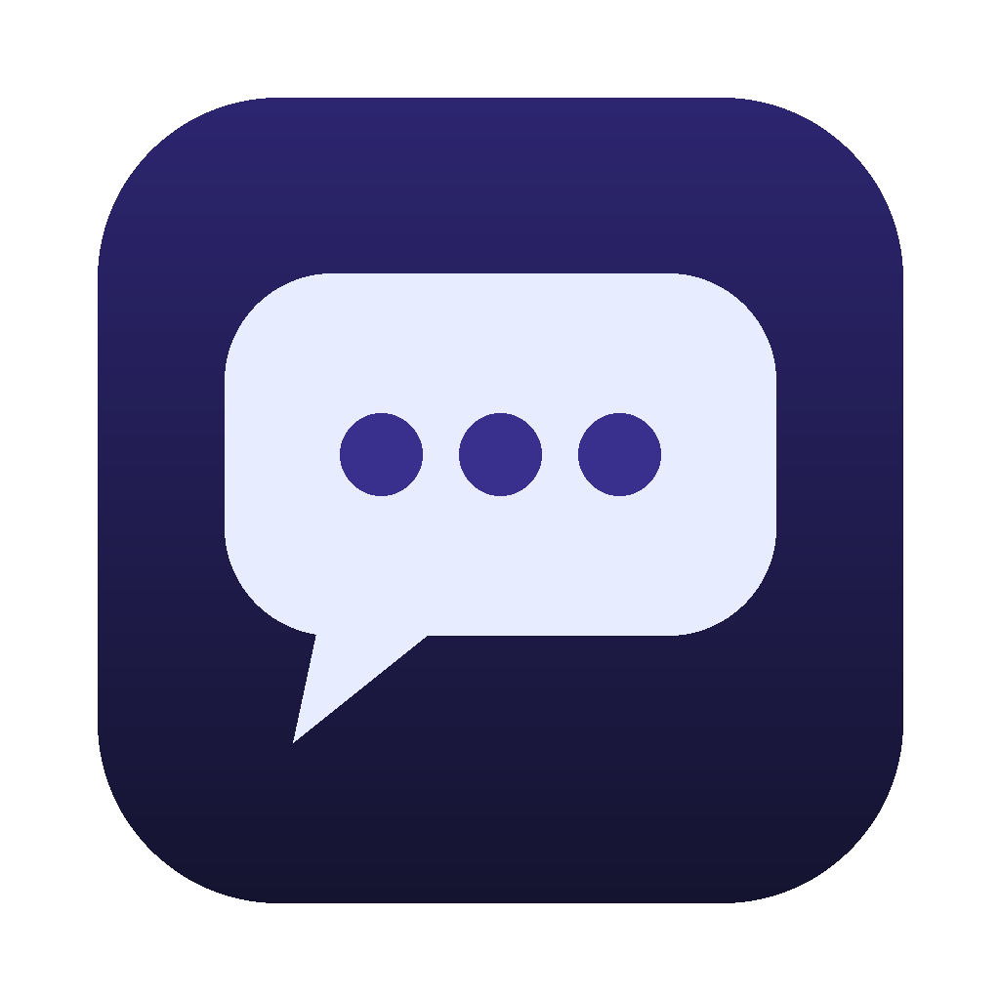

AI Interview Assistant
An interview copilot for macOS that stays hidden from screen sharing.
Install
- Open the downloaded DMG and drag AI Interview Assistant to Applications.
- Open the app. A short walkthrough sets up the AI model, permissions and your first interview session.
- When asked, allow Screen Recording and Microphone. After allowing Screen Recording, quit and reopen the app.
The app is signed and notarized by Apple, and it updates itself when new versions are released.
What it does
- Hidden from Zoom, Meet and Teams screen shares, recordings and screenshots.
- Answers with your resume and the job description in mind.
- Reads screenshots of coding problems and live-transcribes the interviewer.
- Runs privately and for free on your Mac with LM Studio; cloud models are optional.
Use responsibly: many employers and test providers don't allow undisclosed AI assistance in interviews or assessments.